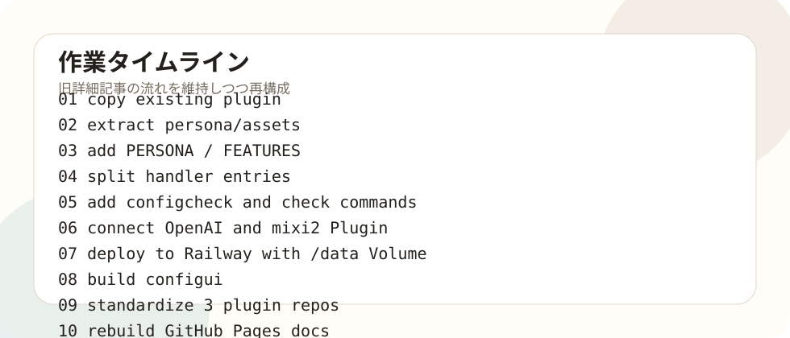

作業記録の読み方
このページは、旧詳細記事を減らさない方針で、全体の流れを大きくまとめたものです。短い要約だけではなく、各段階で何を目的にし、どこを確認し、どこで詰まりやすかったかを記録しています。さらに下部に第01回〜第08回の詳細記事を残し、過去の作業粒度を追える構成にしています。

全体タイムライン
第01回：動いているPluginをbase-botへ分岐する
既に動作していたシベリア・フジタPluginを丸コピーし、壊さずに汎用化する安全地帯を作った。最初からきれいに作り直すのではなく、動作する状態を維持したまま、人格と機能を外へ出す方針にした。
第02回：人格を外部ファイル化して切り替える
人格設定をGoコードから切り離し、personas配下のpersona.jsonへ移した。画像素材もassetsへ分離し、PERSONA、PERSONA_PATH、IMAGE_REF_DIRで切り替える設計にした。
第03回：handlerとschedulerを機能入口で整理する
自動返信、歓迎、お題、管理者コマンド、定時投稿、静寂投稿、画像投稿の入口を分けた。FEATURESで機能単位にON/OFFできるようにした。
第04回：検証コマンドとPowerShell作業導線を作る
configcheck、gptcheck、mixi2check、timelinecheck、postcheckなどを使い、問題がどこにあるか段階的に確認できるようにした。PowerShellの文字化け、BOM、検索対象にも注意した。
第05回：OpenAI APIとmixi2 Pluginにつなぐ
OpenAI APIキー、mixi2 Client ID、Client Secret、Requirement、Application Version、コミュニティインストールを整理し、timeline取得と投稿確認まで進めた。
第06回：GitHubとRailwayで本番稼働させる
Private repo、Railway Variables、/data Volume、Deploy successful、ログ確認を揃えた。.envやlogsをGitHubに入れない運用を徹底した。
第07回：虚無猫の人格調整とconfiguiの追加
persona.jsonをブラウザから編集できるConfig UIを追加した。保存ボタン、Railway確認欄、機能ON/OFF、ローカル.env補助設定を整理した。
第08回：作業ログを公開サイトとして作り直す
Plugin本体とは別にvoidcat-plugin-notesを用意し、GitHub Pagesで公開できる制作記録を作った。公開用なので秘密値や実ログは含めない。
今回追加：三体Plugin標準化
虚無猫、フジタ、空想アイを3体とも専用repo化し、base-botは共通テンプレへ戻した。Voidcatだけbase-bot名義だった曖昧さを解消した。
今回追加：Config UI起動導線の完成
open-configui.batとデスクトップショートカットを作成。文字化け回避のためASCII版へ修正し、ブラウザ自動起動も安定化した。
詳細記事一覧
失敗・詰まりポイント
| 問題 | 原因 | 対応 |
|---|---|---|
| 虚無猫が独立しているか分からない | フォルダ名がbase-botのままだった | mixi2-community-voidcat-pluginへ標準化。 |
| base-botが消えたように見えた | Move-ItemでVoidcatへ移した | 退避フォルダからbase-botをテンプレとして復元。 |
| batが文字化けした | 日本語入りbatの文字コード問題 | ASCII版に差し替え。 |
| ブラウザが開かなかった | 起動待ちとstartの扱いが不安定 | Start-Processと待機処理へ変更。 |
| ZIP内のdocsパスが想定と違った | 展開階層が異なった | 展開後に構造確認してからコピー。 |
| 旧記事が消えたように見えた | docs丸ごと置換方針だった | 最終的に新しい構成で詳細記事も再生成。 |